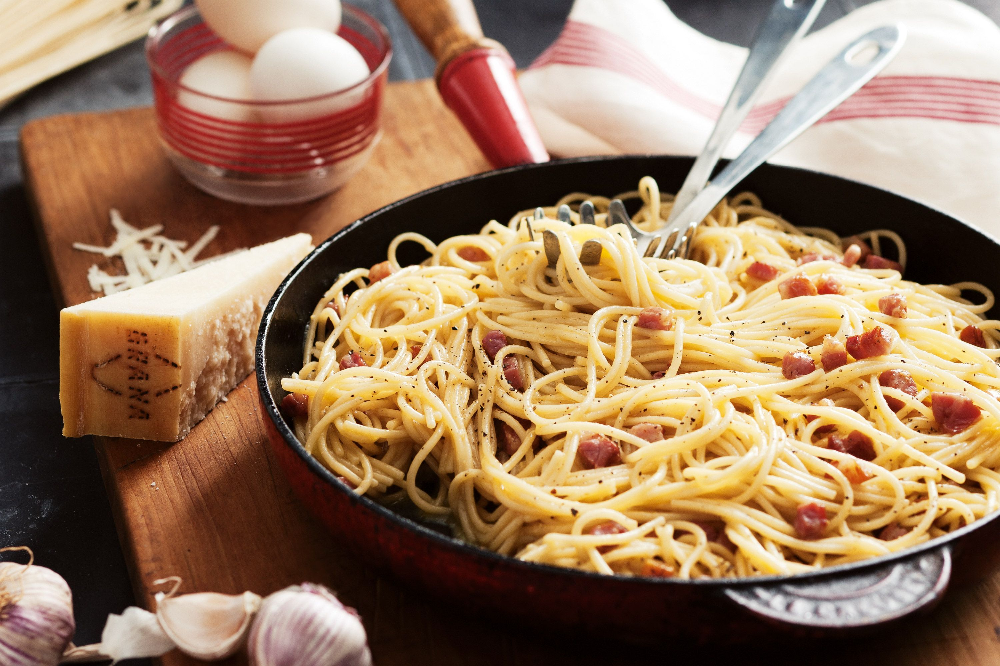
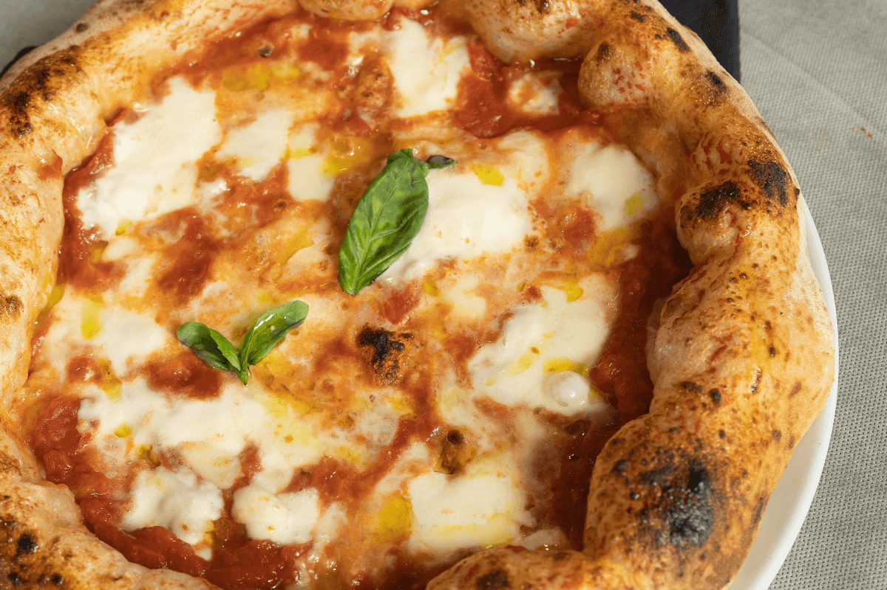

Algunos platos típicos de Italia
Spaghetti alla carbonara
La clave para una buena pasta a la carbonara está en la técnica. Se cocina la panceta o guanciale hasta que esté crujiente, se retira parte de la grasa y se reserva. Mientras tanto, se cuece la pasta al dente. Luego, en un tazón aparte, se mezclan huevos batidos con queso rallado y pimienta negra. Una vez la pasta está lista, se escurre y se mezcla rápidamente con la panceta o guanciale cocida. Después, se agrega la mezcla de huevos y queso, asegurándose de que la temperatura de la pasta cocida caliente sea suficiente para cocinar los huevos, sin que se solidifiquen y se conviertan en revuelto. El resultado final debe ser una pasta cremosa y ligeramente espesa, con la salsa de huevo y queso cubriendo la pasta, pero sin estar excesivamente líquida. Se puede añadir un poco de agua de la cocción de la pasta si es necesario para ajustar la consistencia.
Pizza Napolitana
La pizza napolitana es un ícono de la cocina italiana, conocida por su masa delgada y bordes inflados. Se elabora con ingredientes simples pero de alta calidad: salsa de tomate fresco, mozzarella de búfala, albahaca fresca, aceite de oliva y sal marina.
Lo más característico es su cocción en un horno de leña extremadamente caliente, lo que permite que la pizza se cocine en pocos minutos, creando una base ligeramente quemada y burbujeante, con un centro suave y delicioso.
La Asociación de Verdadera Pizza Napolitana establece estándares estrictos para autenticar una pizza napolitana, incluyendo el tipo de harina, los ingredientes y el proceso de elaboración. Este plato representa una tradición culinaria arraigada en la región de Nápoles y ha ganado reconocimiento internacional como un símbolo de excelencia en la cocina italiana.